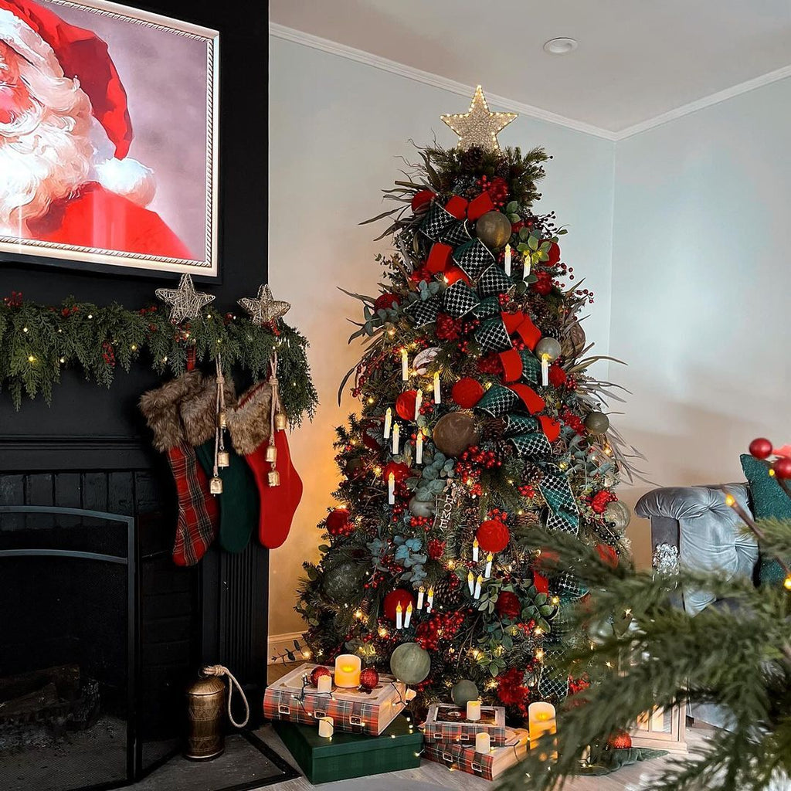

PARTNERED IN 2025
Cottages & Bungalows: Holiday Decor

Carol's Christmas Conifers was featured in the Cottages & Bungalows Holiday Decor issue, with a curated bungalow scene of Christmas trees, wreaths, garlands, lights, nutcracker accents, and ornaments. The spread captured a timeless approach to holiday design, rooted in detail, balance, and warmth.